Project 3: [Auto]Stitching Photo Mosaics
Part A: Image Warping and Mosaicing
Overview
In Part A, I built image mosaics by estimating planar projective transforms and used them to warp and composite overlapping photos. Using photos I captured, I recovered their homographies H, applied inverse warping with both nearest-neighbor and bilinear interpolation, explored rectification, and finally blended the aligned images into seamless mosaics.
Part A.1: Shoot the Pictures
To enable projective alignment, I captured two or more overlapping photo sets by rotating the camera in place (fixed center of projection) using my personal iPhone. I kept shots close in time and targeted ~40–70% overlap between adjacent frames. These image sets serve as inputs for the following subsections A.2–A.4.


Part A.2: Recover Homographies
In Part A.2, I recover the homography (H) that maps points from Image A to Image B using the Direct Linear Transform (DLT).
Starting from the homogeneous relation x′ ∼ Hx and writing it in inhomogeneous form, each correspondence
(x, y) → (u, v) yields two linear
constraints after clearing the denominator. I stack these into a 2N × 9 system Ah = 0 with unknowns
h = vec(H).
Next, for each pair, I add the “u” row
[−x, −y, −1, 0, 0, 0, ux, uy, u] and the “v” row
[0, 0, 0, −x, −y, −1, vx, vy, v].
I build these rows efficiently with vectorized slices so every other row corresponds to the same point.
System Size: A ∈ ℝ16×9 (two rows per correspondence)
Full Matrix A
# [[ -766.7 -610.3194 -1. 0. 0. 0. 97754.25 77815.7177 127.5 ]
[ 0. 0. 0. -766.7 -610.3194 -1. 414079.8306 329621.6709 540.0806]
[ -888.3796 -655.6914 -1. 0. 0. 0. 243487.6457 179712.3213 274.0806]
[ 0. 0. 0. -888.3796 -655.6914 -1. 543989.1995 401505.2245 612.3387]
[ -750.2011 -855.7409 -1. 0. 0. 0. 61576.9883 70239.7619 82.0806]
[ 0. 0. 0. -750.2011 -855.7409 -1. 617354.9849 704205.7166 822.9194]
[ -876.0054 -890.8011 -1. 0. 0. 0. 225627.9009 229438.7479 257.5645]
[ 0. 0. 0. -876.0054 -890.8011 -1. 758860.8509 771677.9831 866.2742]
[ -725.4527 -1072.2892 -1. 0. 0. 0. 38577.7018 57021.575 53.1774]
[ 0. 0. 0. -725.4527 -1072.2892 -1. 779709.5287 1152486.106 1074.7903]
[ -911.0656 -1074.3516 -1. 0. 0. 0. 266633.6315 314421.1293 292.6613]
[ 0. 0. 0. -911.0656 -1074.3516 -1. 977323.5713 1152484.7004 1072.7258]
[ -1168.8613 -738.186 -1. 0. 0. 0. 701637.2684 443114.0187 600.2742]
[ 0. 0. 0. -1168.8613 -738.186 -1. 833982.5306 526695.7263 713.5 ]
[ -1597.8333 -659.8161 -1. 0. 0. 0. 1589199.879 656250.9935 994.5968]
[ 0. 0. 0. -1597.8333 -659.8161 -1. 1057585.2661 436723.782 661.8871]]Correspondences: (A → B)
# (x, y) (u, v)
Point 1: (766.70, 610.32) (127.50, 540.08)
Point 2: (888.38, 655.69) (274.08, 612.34)
Point 3: (750.20, 855.74) (82.08, 822.92)
Point 4: (876.01, 890.80) (257.56, 866.27)
Point 5: (725.45, 1072.29) (53.18, 1074.79)
Point 6: (911.07, 1074.35) (292.66, 1072.73)
Point 7: (1168.86, 738.19) (600.27, 713.50)
Point 8: (1597.83, 659.82) (994.60, 661.89)A Rows: (pair 1)
# u-row: [-766.7000, -610.3194, -1, 0, 0, 0, 97754.2500, 77815.7177, 127.5000] · h = 0
v-row: [0, 0, 0, -766.7000, -610.3194, -1, 414079.8306, 329621.6709, 540.0806] · h = 0Homography H
# [ 1.920604 -0.044450 -1279.934283]
[ 0.424871 1.573638 -544.629674]
[ 0.000482 -0.000004 1.000000]
Because Ah = 0 is homogeneous, I solve for the right singular vector of A with the smallest singular value (via SVD), reshape it to 3×3,
and fix the scale by setting H33 ≈ 1. I then visualize the clicked points side-by-side with connecting lines to confirm consistent ordering
and good spatial coverage, both of which are important for numerical stability.
I use no normalization here. In practice, adding Hartley normalization or RANSAC improves robustness, but for this part, the plain DLT with N ≥ 4 clean, well-distributed correspondences recovers a valid H and clearly demonstrates the setup, system Ah = 0, and final matrix. We will, however, explore normalization later in this project.


Part A.3: Warp the Images
In Part A.3, I warp a source image into a reference frame using the homography H estimated in A.2.
I use inverse mapping: for every pixel center (x, y) in the destination grid, I compute the corresponding
source coordinate by applying H−1 and then sample the source at that sub-pixel location.
Inverse mapping is important because it guarantees every output pixel knows where to pull data from, which avoids
the holes you get with forward splatting.
For the output canvas, there are two cases. When warping into a reference image, I simply adopt the reference image’s
height and width as the destination grid. For free warps (no fixed reference), I first project the four corners of the
source image through H and take the integer bounding box of those projected corners to define the canvas,
so nothing gets cropped. I generate a full meshgrid of destination pixel centers, transform them with
H−1 to obtain floating-point (xs, ys) in the source, and keep
a boolean valid mask for samples that lie inside the source bounds (useful later for blending). All images are coerced
to RGB: grayscale is stacked to three channels and RGBA drops the alpha channel for consistent math.
I implemented two interpolation methods from scratch. Nearest neighbor rounds
(xs, ys) to the closest integer and copies that pixel value. It is extremely fast
and preserves sharp transitions, but it introduces jagged, stair-stepped edges on diagonals and thin structures.
Bilinear interpolation computes the four neighboring pixels around (xs, ys)
and blends them with weights derived from the sub-pixel offsets. This produces a smoother, more faithful resampling at
a small computational cost and with a touch of blur, which is generally a better trade-off for mosaicing and rectification.


Part A.4: Blend the Images into a Mosaic
In Part A.4 I blend the warped source with the reference into a seamless mosaic on a union canvas. I first reuse the homography H (from A.2) and project the source corners into the reference frame. The bounding box over those points and the reference defines a larger canvas so the reference lands at a known location.
I then inverse-warp the source onto this union grid. For each union pixel, I convert to reference coordinates
(subtract the offset), apply H−1 to get (xs, ys),
and sample the source with my from-scratch bilinear interpolator. This yields a warped RGB image and a binary valid mask.
I also paste the reference image into the same canvas and create its hard mask.
For compositing, I use feather blending with soft masks. I blur each hard mask with a Gaussian to get weights that are ~1 in the interior and decay at the edges, then compute:
blend = (w_A · A + w_B · B) / (w_A + w_B + ε)This suppresses seams and small misalignments. The blending results were clear and consistent, so there was no need to implement a Laplacian pyramid.
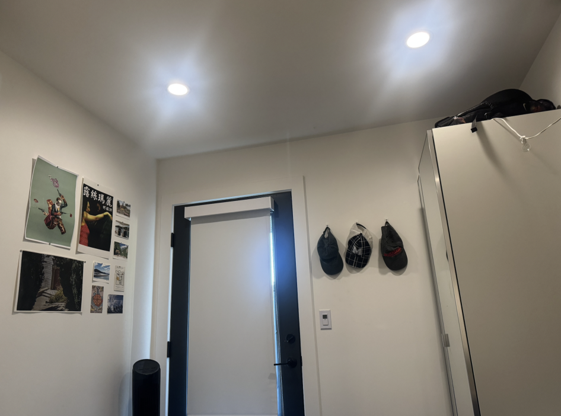
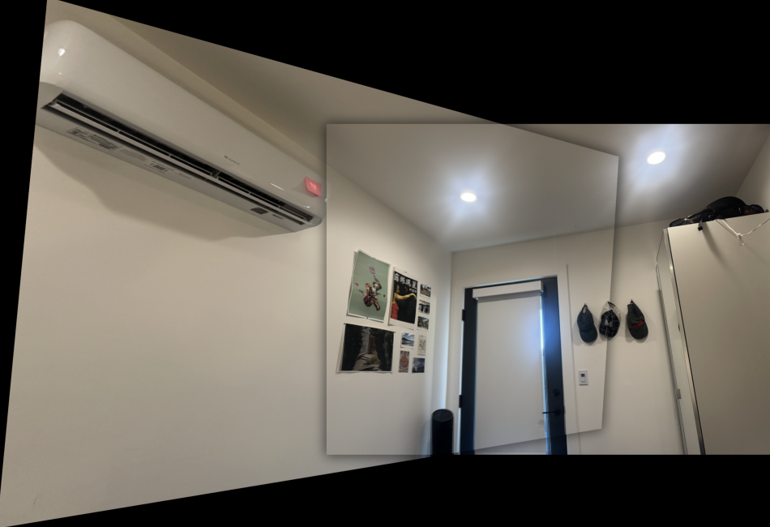
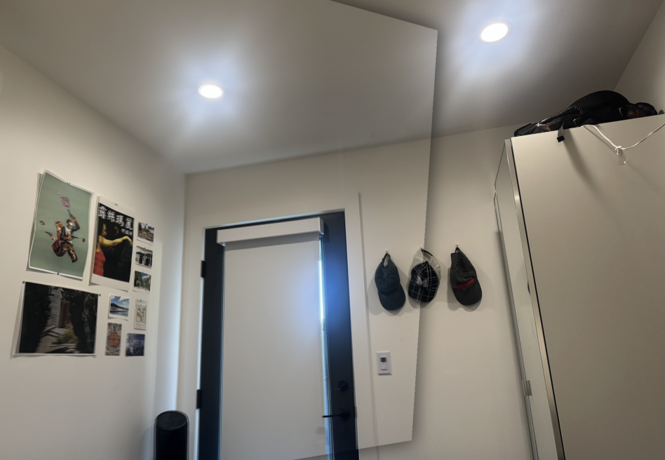
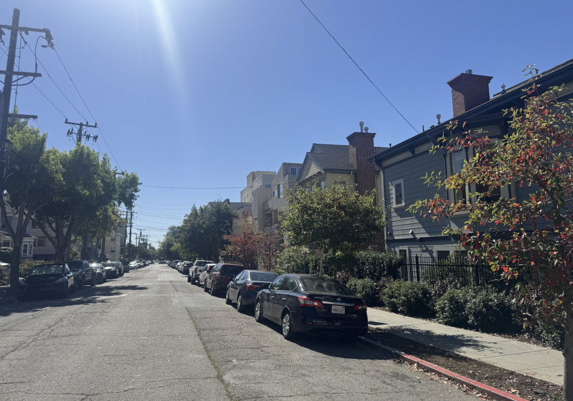
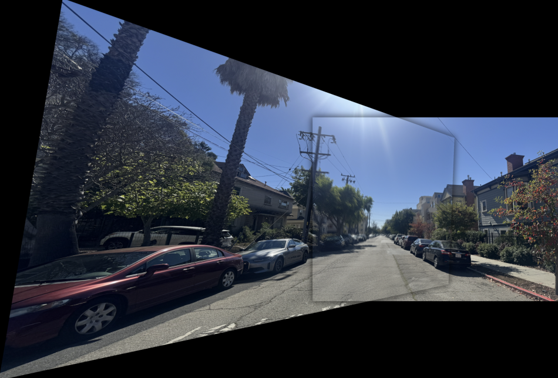
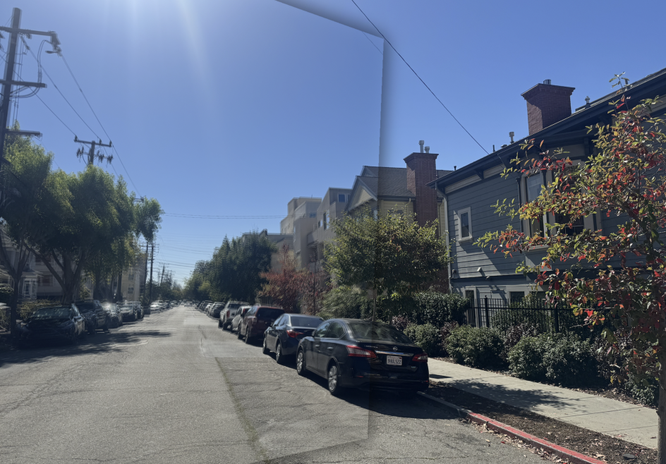
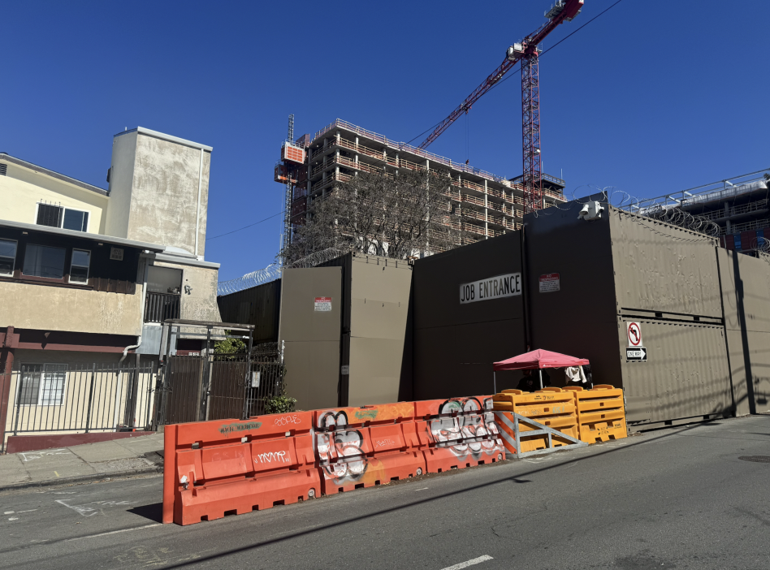
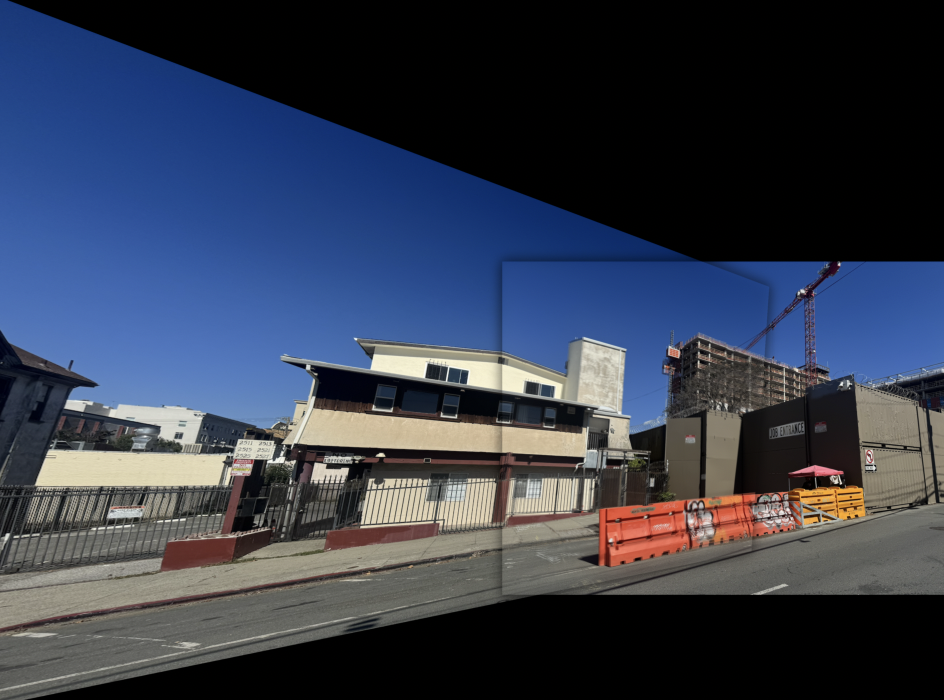
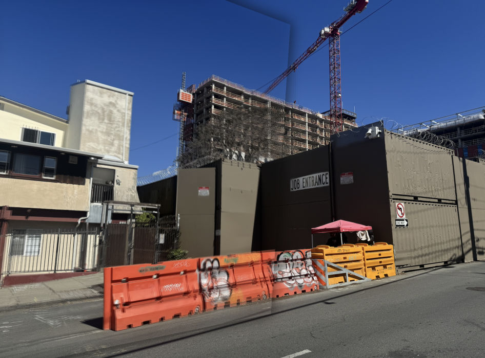
Part B: Feature Matching for Autostitching
B.1: Detecting Corner Features
To kick off feature detection, I implemented a Harris corner detector to find distinctive points in an image—those that change sharply
in both directions, like building corners or patterned edges. After converting each image to a clean grayscale float array (with automatic
handling for RGB and RGBA images), I computed the Harris response map using a Gaussian scale of 1.5 to smooth out noise. Local maxima in
that response map represent potential corners, so I extracted them with peak_local_max, applied a small threshold to remove weak
detections, and then discarded any points too close to the borders. The result was a dense set of high-quality Harris points—often clustering
around strong textures or repetitive patterns.
To make those features more spatially balanced, I added Adaptive Non-Maximal Suppression (ANMS). Instead of keeping every strong corner, ANMS finds the distance from each point to its nearest significantly stronger neighbor and keeps only the top 500 with the largest radii. This effectively spreads out the detections while preserving the strongest ones.
In practice, the difference is clear. The raw Harris map produces many overlapping detections in textured areas, whereas the ANMS-filtered result keeps a uniform, visually pleasing set of corner features that cover the scene evenly. This is more ideal for the later steps in matching and homography estimation.
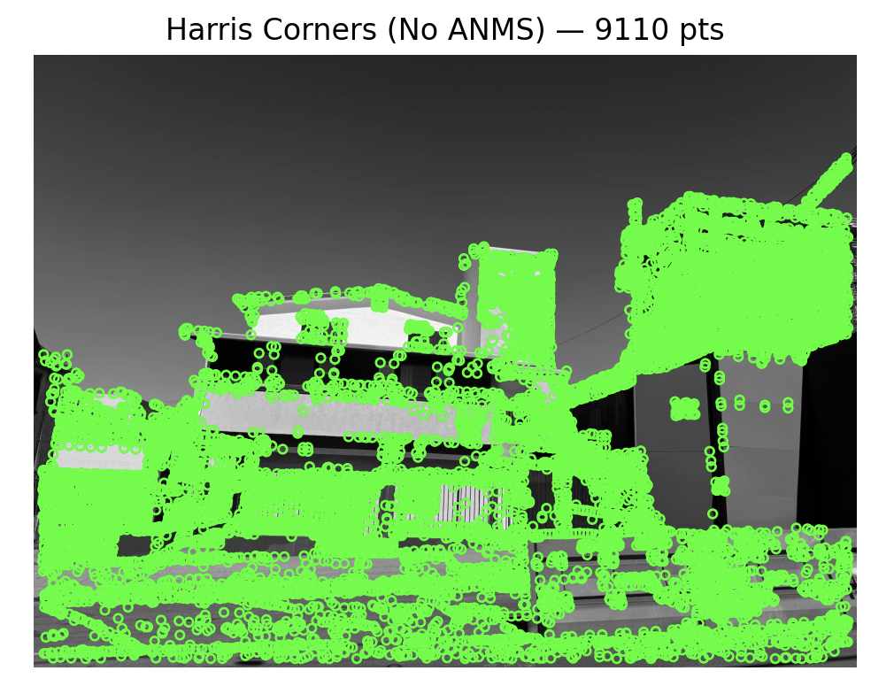
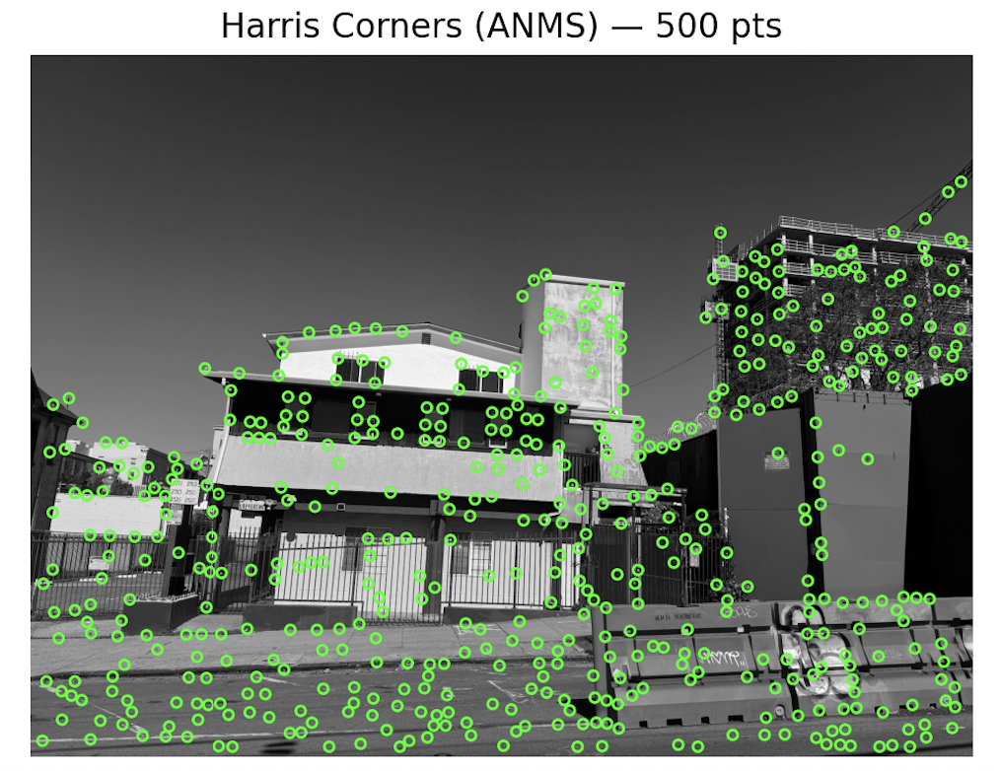
B.2: Feature Descriptors
After detecting stable corners with Harris + ANMS, the next step was to describe what each of those corners actually looks like. For that, I implemented a simple but effective axis-aligned feature descriptor that turns a 40×40 region around each corner into a compact 8×8 representation.
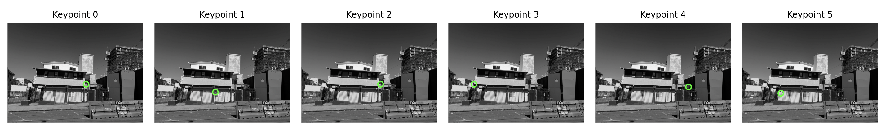
The idea is to capture enough local context to make features recognizable between images, but not so much that they become sensitive to noise or lighting.
For every keypoint, I first extract a 40×40 grayscale patch centered on it. I then apply a small Gaussian blur (σ ≈ 2) to smooth out noise
and make the descriptor robust to tiny pixel shifts or illumination changes.
Next, I downsampled the blurred patch from 40×40 to 8×8 using strict area averaging, where each 8×8 cell summarizes a 5×5 region from the original patch. Finally, I bias-gain normalize each descriptor by subtracting the mean, divided by the standard deviation, and performing a final L2 normalization. This makes the descriptors invariant to lighting and contrast differences.
Each corner now becomes a 64-dimensional feature vector that encodes its local structure in a consistent, comparable way.
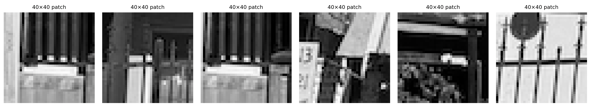
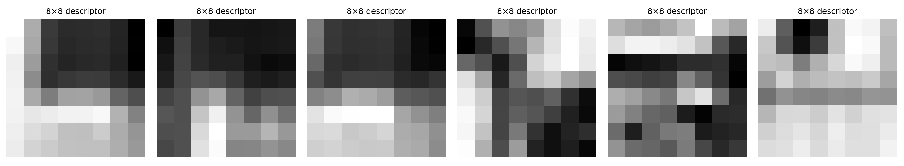
B.3: Matching Descriptors
With our corner points and 8×8 descriptors ready, the next step was to connect matching features between two overlapping images. I started by computing the pairwise Euclidean distances between all descriptors from the left (reference) and right (target) frames to measure visual similarity.
To ensure reliable matches, I used Lowe’s ratio test, a method introduced in SIFT (scale invariant feature transform). For each feature, I compared its best and second-best matches in the other image and only kept those where the distance ratio was below 0.75. This filters out ambiguous points that don’t have a clearly unique correspondence.
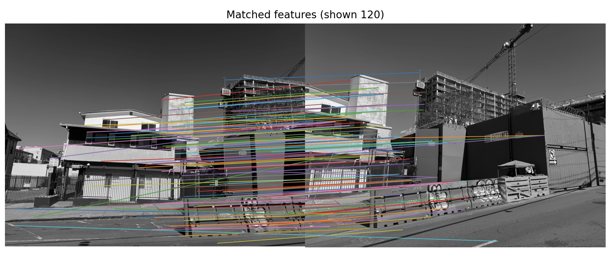
Since the two frames only overlap horizontally by about 50%, I added a helper function that filters keypoints to only those lying inside the shared region, keeping the right half of the reference image and the left half of the target image. This simple geometric constraint greatly improved accuracy by preventing impossible matches in non-overlapping areas.
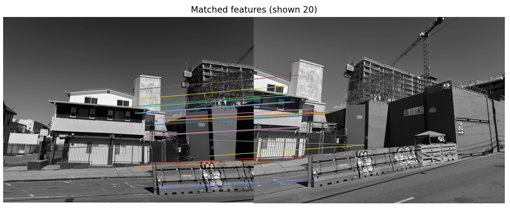
B.4: Robust Homography with RANSAC
From putative matches, I estimate a projective transform using RANSAC. On each iteration:
sample 4 correspondences, compute H (DLT), count inliers under a symmetric reprojection
threshold, and keep the model with the most inliers. I then refit H on all inliers and
proceed to warp/blend as in Parts A.3–A.4 for an autostitched mosaic.


H.Notes & Parameters
Corner detector: Harris + ANMS (top K)
Descriptor: normalized patch (e.g., 8×8)
Matching: L2 + ratio test (τ ≈ 0.6–0.8)
RANSAC: 4-point DLT, ε (px) threshold, N iters
Refinement: Refit H on inliers; warp + feather blend